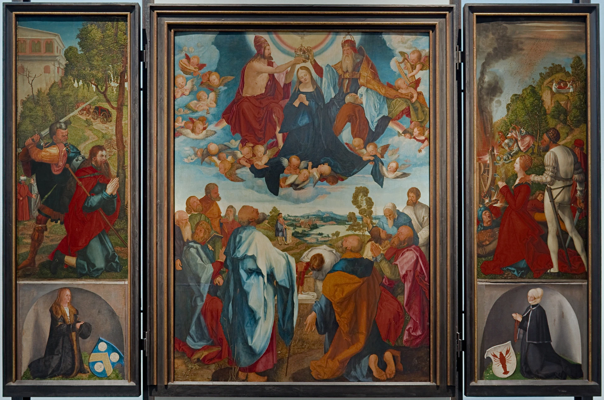
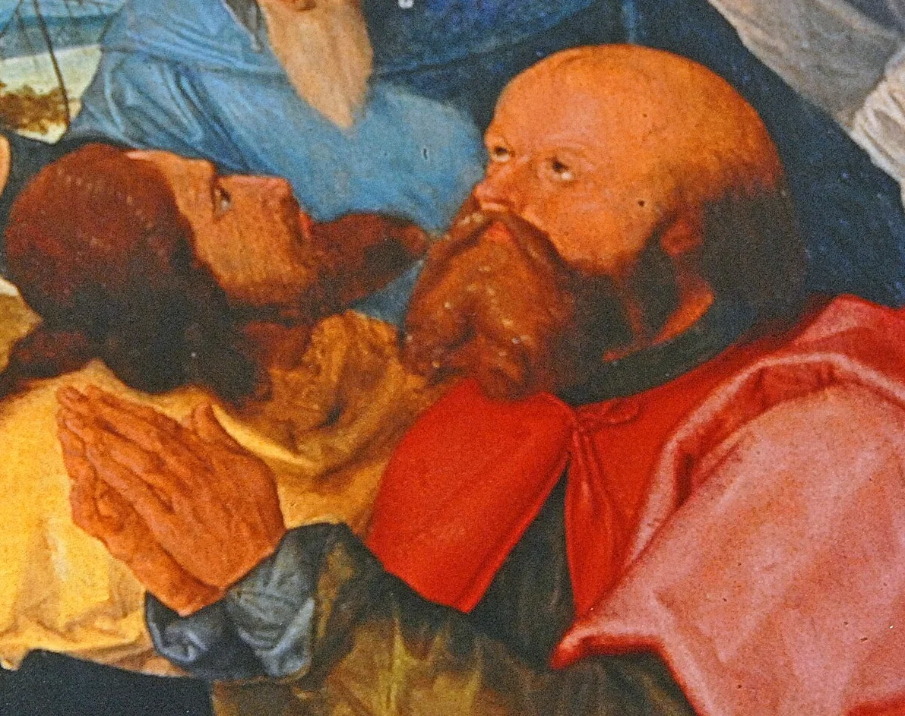
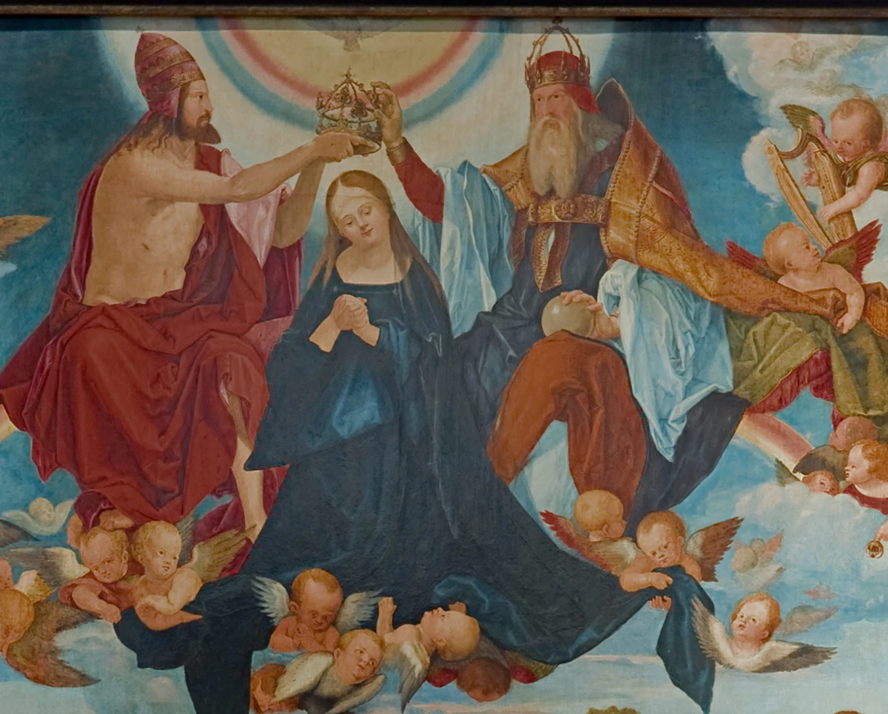
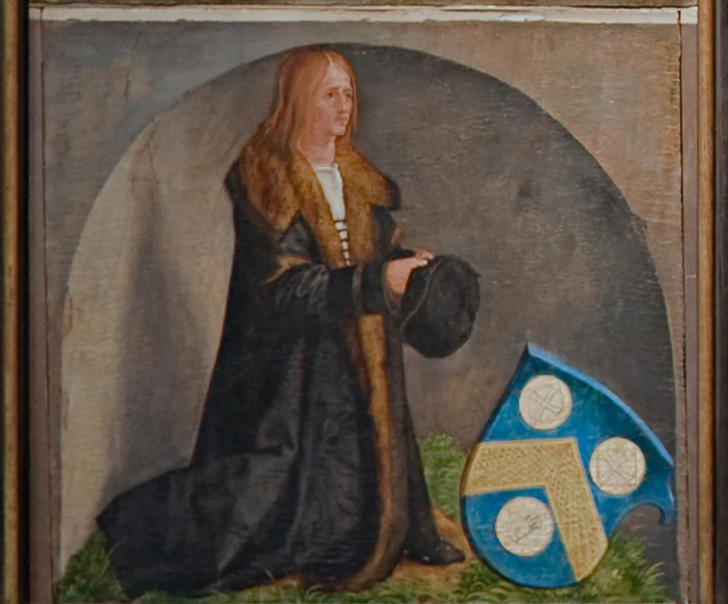

아직 펼치지 않은 카드
아직 펼치지 않은 카드
1509년 8월, 독일 화가 뒤러는 다 그린 제단화(교회 제단 뒤를 꾸미는 그림)를 떠나보내며 “깨끗이 두면 500년은 밝고 생생할 것”이라고 썼어요. 그 그림 속 한 사도(예수의 제자)의 손을 먼저 연습한 종이가 「기도하는 손」이에요. 셋째 장면에서 옛 지도 위로, 그림이 간 길을 따라가 보세요.
뒤러 아저씨가 큰 그림을 그리려고 파란 종이에 손을 먼저 연습했어. 큰 그림은 먼 길을 떠났대. 옛날 지도 위로 같이 따라가 볼까?
검수 전 시안이에요(기준서 1판). 장면에는 뒤러가 헬러에게 쓴 편지(콘웨이 1889년 영어 번역)와 프랑크푸르트 역사박물관, 서평과 연구에 있는 것만 옮겼어요. 기록이 서로 다른 곳은 ‘기록마다 다른 점’에 적었어요. 상상은 ‘눈 감고 상상해 보기’에만 썼어요.
1507년, 프랑크푸르트의 상인 야코프 헬러와 아내 카타리나가 뉘른베르크의 뒤러에게 제단화를 주문했어요. 부부가 묻힐 도미니코회(가톨릭 수도회의 하나) 교회에 걸 그림이었어요.
그 무렵 뒤러는 베네치아에서 지내다 막 돌아온 참이었어요. 1507년 8월 28일, 그는 헬러의 편지를 반갑게 받았다는 답장을 썼어요. 두 해 동안 이어질 편지 아홉 통의 첫 통이에요.

사진 가운데 큰 그림은 1614년에 원래 그림 대신 걸린 복제본이에요. 양쪽 날개는 처음 그대로예요. 가운데 그림은 뒤러가 혼자 그렸고, 날개는 그의 조수들이 맡았어요.
멀리 프랑크푸르트에서 그림을 그려 달라는 편지가 왔대.
물어보기누군가에게 그림을 부탁한다면 무엇을 그려 달라고 할까?
1508년, 뒤러는 큰 그림에 들어갈 사람들의 머리와 손, 발, 옷자락을 한 장씩 따로 그렸어요. 1889년에 뒤러의 글을 엮은 콘웨이는 이런 연습 그림이 스물한 장 남아 있고, 대부분 1508년에 그렸다고 적었어요.
「기도하는 손」도 그 가운데 한 장이에요. 복제본으로 보면, 큰 그림 오른쪽 끝에서 붉은 망토를 두르고 하늘을 올려다보는 사도의 손이에요.
“가운데 그림에는 나 말고는 아무도 붓질 한 번 하지 않을 것이오.”
뒤러가 헬러에게 쓴 편지, 1508년 8월 24일 · 콘웨이의 영어 번역을 이 안내서가 옮김
처음 약속한 값은 130플로린이었어요. 같은 편지에서 뒤러는 이렇게 공들여 그리려면 200플로린은 받아야 한다고 썼어요.
큰 그림을 그리기 전에, 손을 따로 연습했대.
물어보기너는 그림을 그리기 전에 무엇을 먼저 연습해 보고 싶어?
이 지도는 1500년 무렵 뒤러가 살던 뉘른베르크에서 만들었어요. 그해 로마로 가는 순례자들을 위해 만든 길 지도예요. 남쪽이 위를 향해요.
‘다음 곳으로’를 누르면 뒤러와 그의 그림이 지나간 곳이 차례로 이어져요. 곳과 곳 사이는 곧은 선으로 이었어요(실제 길과 달라요).
‘다음 곳으로’를 눌러 따라가 보세요. 이 그림을 맡기 전 뒤러가 머물던 베네치아에서 시작해요. 이 지도는 남쪽이 위예요.
 베네치아뉘른베르크프랑크푸르트뮌헨
베네치아뉘른베르크프랑크푸르트뮌헨에르하르트 에츨라우프, ‘로마 가는 길’ 지도, 1500년 무렵 · 뉘른베르크 · 에르하르트 에츨라우프 판화 · 퍼블릭 도메인 · 위키미디어 공용
큰 그림은 불에 탔어요. 뉘른베르크 작업실의 연습 종이는 남아, 빈의 알베르티나 미술관이 지켜요.
옛날 지도는 위쪽이 남쪽이래. 그림이 어디로 갔는지 따라가 보자.
물어보기그림이 마지막에 도착한 곳은 어디였어?
큰 그림은 사라졌지만, 1614년에 그 자리를 채운 복제본이 남아 있어요. 오른쪽 아래, 붉은 망토의 사도가 하늘을 올려다보며 두 손을 모아요. 초록 소매에서 나온 그 손이, 옆 사도의 노란 옷 앞에 겹쳐 보여요.
연습 그림 속 손이 큰 그림에서 이 사도의 손이 되었어요. 복제본을 그린 사람은 뉘른베르크의 화가 요프스트 하리히로 알려져 있어요.

복제본을 보면, 큰 그림 한가운데 조금 왼쪽 먼 풍경 속에 뒤러 자신이 서 있어요. 그가 든 판에는 “독일 사람 알브레히트 뒤러가, 동정녀께서 아기를 낳으신 뒤 1509년에 이것을 그리고 있었다”라는 라틴어 글이 있어요. 동정녀는 마리아를 가리키고, 예수가 태어난 때부터 센 1509년이라는 뜻이에요. 판에 크게 적힌 AD는 뒤러 이름의 머리글자예요.
연습한 손이 큰 그림에서 사도 할아버지의 손이 되었어.
물어보기두 그림에서 똑같은 손을 찾아볼까?
큰 그림은 뒤러가 바란 500년을 채우지 못하고, 뮌헨 궁전의 불에 사라졌어요. 1508년의 연습 종이는 남아, 파란 종이 위의 두 손은 500년을 넘겼어요.
1509년 8월, 다 그린 큰 그림을 떠나보내며 뒤러는 헬러에게 이렇게 썼어요.

“깨끗이 두면 500년은 밝고 생생하리라는 것을 나는 아오. 사람들이 흔히 그리는 식으로 그리지 않았기 때문이오.”
뒤러가 헬러에게 쓴 편지, 1509년 8월 26일 · 콘웨이의 영어 번역을 이 안내서가 옮김
큰 그림은 불에 탔지만, 연습한 종이는 지금도 남아 있어.
물어보기손끝에 하얀 빛이 몇 군데 있는지 찾아볼까?
눈 감고 상상해 보기
뉘른베르크의 작업실. 창가 탁자에 파랗게 칠해 말린 종이가 놓여 있어요. 가는 붓에 검은 잉크를 묻혀 손가락 마디를 하나씩 그어 나가요. 다른 붓으로 흰 물감을 찍자, 손끝에 빛이 얹혀요. 창밖에서 수레바퀴 소리가 지나가요.
눈을 감아 봐. 파란 종이 위에 하얀 물감으로 손끝을 콕콕. 반짝 빛이 생겼어.
뒤러처럼, 500년 뒤에도 밝고 생생하게 남기를 바라는 것이 나에게도 있나요?
오래오래 반짝반짝 남았으면 하는 게 있어? 그게 뭐야?
마음에 닿는 한 줄을 고르거나 직접 써 보세요. 한 줄을 남기면 이 자리의 도장이 찍혀요. 이 기기에만 저장돼요.
이야기를 보다 궁금해질 만한 것들이에요. 답을 읽거나 짧은 영화로 보세요.


아직 펼치지 않은 이야기예요. 누르면 이야기가 펼쳐지고 색이 돌아와요. 더 알고 싶으면 근거를 따라가 보세요.
다 펼치면, 다음에 오실 때 새 이야기가 찾아와요.
오늘의 뒷이야기는 여기까지예요. 다음에 오시면 새 이야기가 기다리고 있어요.
펼친 뒷이야기 · 누르면 다시 볼 수 있어요
불탄 해 2023년에 나온 루블랙의 책과 그 서평은 1729년 뮌헨 궁전의 불로 적어요. 1889년 콘웨이의 책은 1674년, 프랑크푸르트 역사박물관은 1724년으로 적어요.
연습인가, 작품인가 오랫동안 이 그림은 제단화를 위한 연습 그림으로 여겨졌어요. 알베르티나의 큐레이터 메츠거는 손님에게 보여 주려고 끝까지 그린 작품이라고 봐요. 뒤러의 편지에는 이 그림의 이름이 나오지 않아요.
종이의 색 1889년 콘웨이는 연습 그림들을 회색 종이에 그렸다고 적었어요. 지금은 뒤러가 직접 파랗거나 초록빛으로 바탕을 칠한 종이로 설명해요.
얼마를 받았나 프랑크푸르트 역사박물관은 뒤러가 처음에 130굴덴(플로린과 같은 돈)을 말했다가, 계산이 100굴덴 모자랐다며 200을 달라고 했고, 헬러가 따지면서도 치렀다고 적어요. 2024년 한 서평은 뒤러가 값을 조금 올렸지만 돈으로는 헬러가 이긴 셈이라고 써요.
확인한 날 · 2026년 11월 18일 · 바뀌기 쉬운 정보라 정기적으로 다시 확인해요
복제본과 날개 독일 프랑크푸르트 역사박물관의 상설 전시 ‘프랑크푸르트 아인스트?’(새 건물 2층 ‘돈의 도시’)에 있어요. 화요일~일요일 오전 11시~오후 6시에 열고, 월요일은 쉬어요. 상설 전시 입장료는 8유로(할인 4유로), 18살까지는 무료예요.
「기도하는 손」 오스트리아 빈의 알베르티나 미술관에 있어요. 빛에 약한 종이 그림이라 늘 걸려 있지 않아요. 가기 전에 지금 전시 중인지 미술관에 확인해 주세요.
‘그림이 간 길’ 장면에서 마지막 곳까지 따라가면 카드에 금박이 입혀져요.
아이와 함께 ‘영화처럼 보기’를 끝까지 보면 카드가 채색돼요.
‘처음 만나는 기독교 문화’의 깊은 카드예요. 카드 단계와 남긴 글은 이 기기에만 저장돼요.
영화처럼 보기 · 약 3분
화면을 누르거나 → 키를 누르면 넘어가요. 그냥 두어도 자막이 저절로 넘어가요.